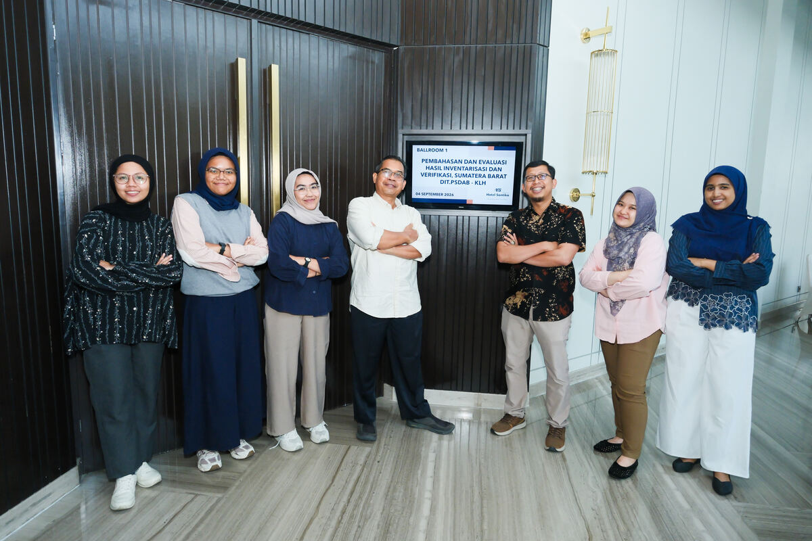
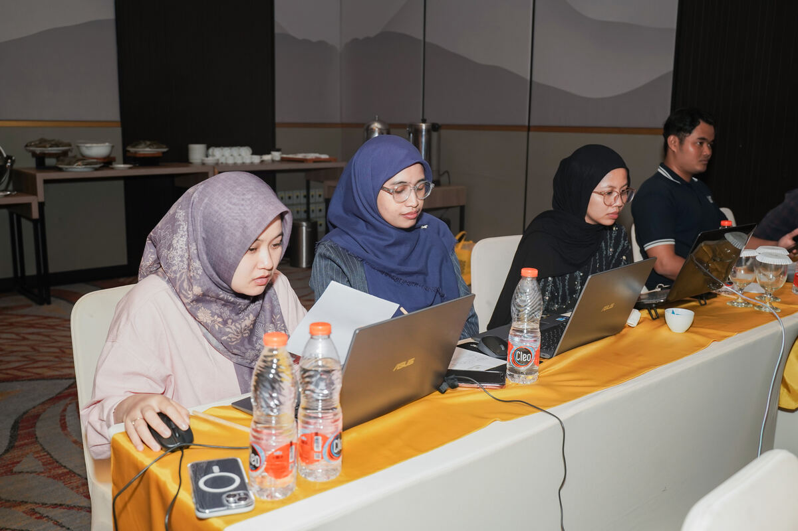
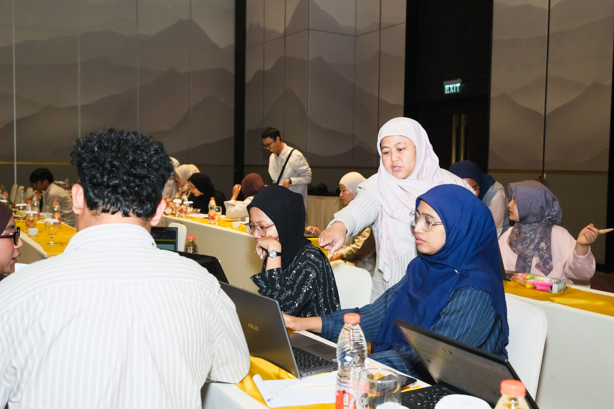

Administrasi Kelengkapan Kegiatan — Kementerian Lingkungan Hidup
Rapat Pembahasan dan Evaluasi Hasil Inventarisasi dan Verifikasi Lingkungan Hidup untuk Mendukung Penguatan Kajian Hunian Tetap (Huntap) dan Hunian Sementara (Huntara) Pascabencana di Sumatera Barat.
Periode Tugas
2–5 September 2026
Lokasi Kegiatan
Padang, Sumatera Barat
Institusi Terlibat
UI · UGM · UNAND
Dokumentasi Kegiatan

Foto bersama tim di lokasi kegiatan — Hotel Santika Premiere Padang, 4 September 2026.

Suasana kerja tim administrasi selama kegiatan.

Koordinasi tim selama pelaksanaan kegiatan.
Konteks Singkat
Kegiatan ini merupakan rapat pembahasan dan evaluasi hasil inventarisasi & verifikasi lingkungan hidup pascabencana di Sumatera Barat, menghadirkan narasumber dan pakar dari tiga perguruan tinggi. Peran saya adalah mendukung sisi administratif kegiatan, khususnya kelengkapan dokumen untuk pertanggungjawaban penyelenggaraan.
Cakupan Kerja
Menghubungi setiap narasumber secara individual untuk meminta dan mengumpulkan berkas berikut:
01 Curriculum Vitae (CV)
02 Kartu Tanda Penduduk (KTP)
03 Boarding pass / bukti perjalanan
04 Materi paparan narasumber
05 Menyusun rincian biaya perjalanan dinas narasumber
Institusi Narasumber
Universitas IndonesiaUniversitas Gadjah MadaUniversitas Andalas
Alur Kerja
Tahap 1Menghubungi narasumber satu per satu untuk menyampaikan kebutuhan dokumen.
Tahap 2Mengumpulkan & memverifikasi kelengkapan berkas dari setiap narasumber.
Tahap 3Menyusun dan menyerahkan berkas sebagai dasar administrasi pertanggungjawaban kegiatan.
Catatan: Ringkasan ini hanya memuat gambaran proses kerja. Dokumen asli (CV, KTP, dsb.) bersifat rahasia dan tidak ditampilkan di sini.